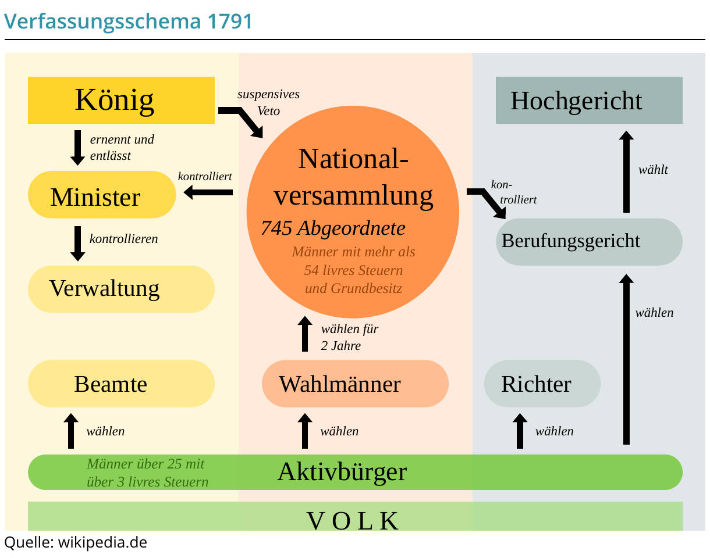

10 Multiple-Choice-Aufgaben, 5 operationalisierte Aufgaben und eine Bildinterpretation
Aktueller Stand
Auswertung des Abschlusstests
M80 / 10
R80 / 20
E80 / 8
Gesamt0%
Der Abschlusstest wurde noch nicht vollständig bearbeitet.
M8 · Mindeststandard
Grundwissen überprüfen
Bei jeder Aufgabe ist genau eine Antwort richtig.
R8 · Regelstandard
Zusammenhänge erklären und beurteilen
Formuliere vollständige Antworten. Öffne danach die Kriterien und prüfe deine Arbeit ehrlich selbst.
Erkläre
1. Erkläre, weshalb der Konflikt um die Abstimmung in den Generalständen zur Gründung der Nationalversammlung führte.
Stelle einen Ursache-Wirkungs-Zusammenhang her und verwende die Begriffe Generalstände, Dritter Stand, Abstimmung nach Ständen und Nationalversammlung.
Analysiere
2. Analysiere das Verfassungsschaubild von 1791. Arbeite die Verteilung der staatlichen Gewalten, die Stellung des Königs und die Grenzen der politischen Beteiligung heraus.
Beziehe Pfeile, Beschriftungen und Personengruppen des Schaubilds als Belege ein.

Verfassungsschema 1791, nach der Darstellung aus Lernpaket 7.
Erläutere
3. Erläutere den Widerspruch zwischen dem Anspruch der Menschenrechtserklärung und der politischen Wirklichkeit der Revolution.
Verbinde eine Aussage der Menschenrechtserklärung mit mindestens zwei Beispielen politischer oder gesellschaftlicher Ausgrenzung.
Analysiere
4. Analysiere Ursachen und Folgen der Terrorherrschaft von 1793/1794.
Unterscheide äußere Bedrohungen, innere Konflikte und die Folgen für politische Gegner und Bevölkerung.
Beurteile
5. Beurteile, ob Napoleon die Errungenschaften der Französischen Revolution eher bewahrte oder beendete.
Formuliere ein Sachurteil, das mindestens ein Argument für Bewahrung und ein Argument für Beendigung gegeneinander abwägt.
E8 · Expertenstandard
Ein Herrscherbild interpretieren
Arbeite nach der Methode des ersten Lernpakets.
Interpretiere
Interpretiere das Herrscherporträt Ludwigs XIV. von Hyacinthe Rigaud als Darstellung absolutistischer Macht.
Arbeite in den Schritten Beschreiben, Untersuchen und Deuten. Belege deine Aussagen an konkreten Bildmerkmalen.
Ludwig XIV. im Krönungsornat, Hyacinthe Rigaud, 1701.
Arbeitsschritte
Beschreiben: Person, Haltung, Kleidung und Umgebung sachlich erfassen.
Untersuchen: Symbole, Farben, Bildaufbau, Licht und hervorgehobene Merkmale analysieren.
Deuten: Zweck, Wirkung und Herrschaftsaussage historisch einordnen.